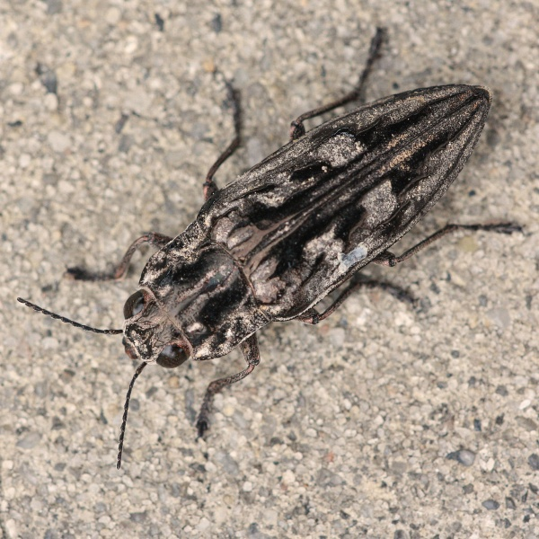

Chalcophora angulicollis
Common name
Western Sculptured Pine Borer
Family
Buprestidae
Family common names
jewel beetles,
metallic wood borers
Commonly observed
April to October
Size
About 2.9 cm
Range Map
Seasonality